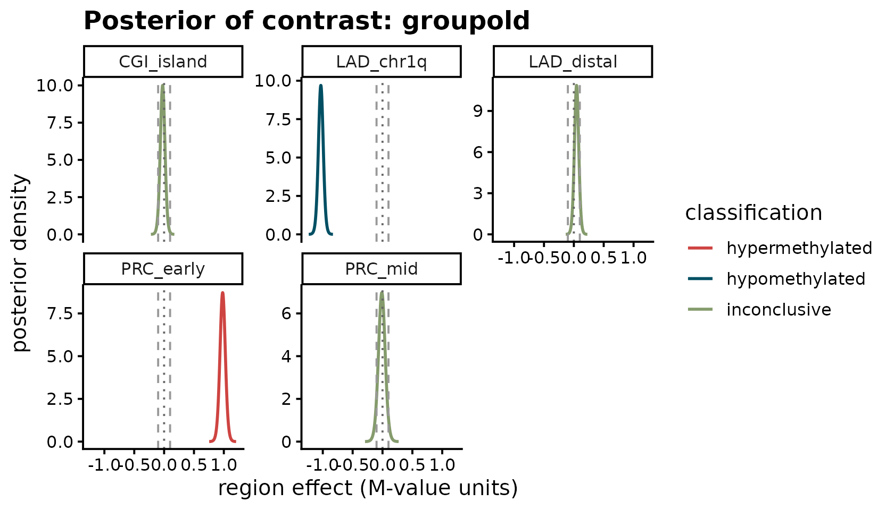
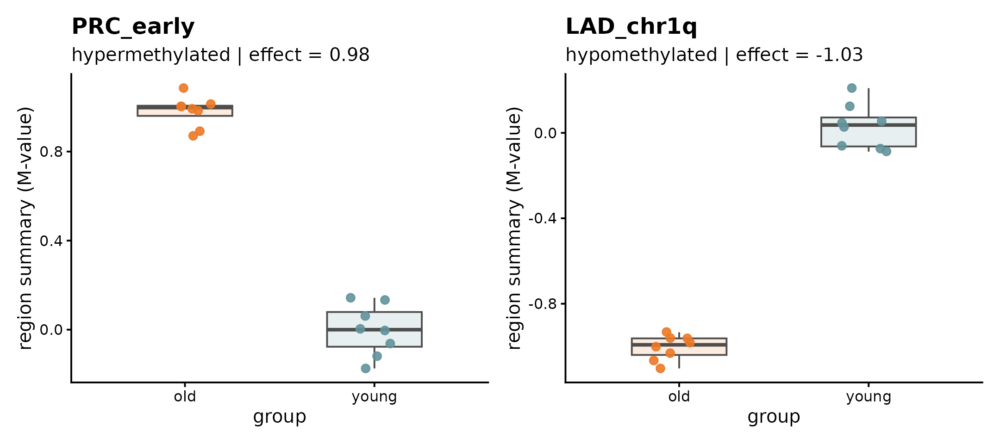
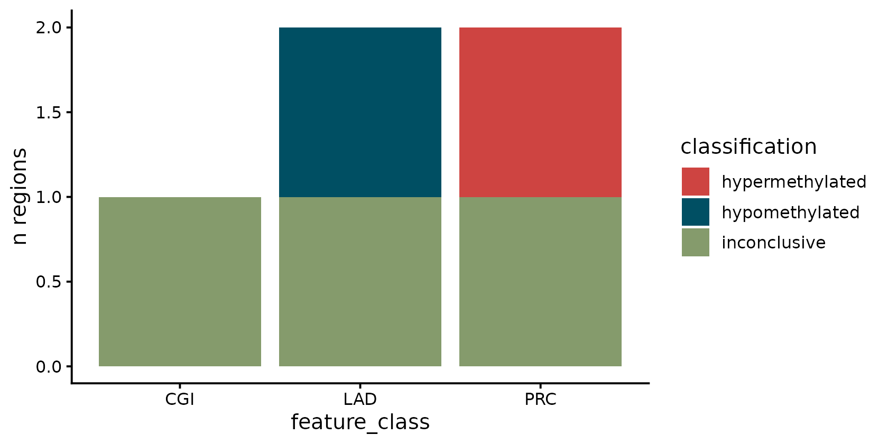

Intro to BREAD
Bayesian region-specific DNA methylation inference
Jaemin Park
2026-04-19
Source:vignettes/bread-intro.Rmd
bread-intro.RmdWhat BREAD is for
Many methylation studies are not purely discovery-oriented. Instead of asking “which CpGs are significant genome-wide?”, the question is often:
- Are PRC2 target regions hypermethylated in old vs. young samples?
- Do bivalent promoters coherently lose methylation after treatment?
- Among my predefined chromatin classes (LADs, PMDs, CGIs, …), which show strong directional evidence at a biologically meaningful effect size?
Existing tooling is strong for genome-wide hypothesis testing, but answering those questions directly benefits from:
- region-centric inference (one answer per region, not per CpG),
- threshold-based decisions on biologically meaningful effect sizes,
- posterior probabilities rather than p-values,
- borrowing strength across probes inside a region.
BREAD provides a minimal, interpretable Bayesian workflow for exactly
these targeted questions, built around SummarizedExperiment
and GRanges.
Build a toy young-vs-old methylation experiment
We simulate 60 CpG probes on chromosome 1 spaced every 1 kb, across 16 samples (8 young, 8 old). We define five regions of interest — a mix of PRC-like, CGI-like, and LAD-like feature classes — and inject a strong hyper or hypo signal into a few of them so we can see BREAD recover them.
n_probes <- 60L
n_samples <- 16L
# Probe-level GRanges (rowRanges of the SE)
probes <- GRanges(
seqnames = "chr1",
ranges = IRanges(start = seq(1L, by = 1000L, length.out = n_probes),
width = 1L)
)
names(probes) <- sprintf("cg%04d", seq_len(n_probes))
# Sample metadata
coldata <- S4Vectors::DataFrame(
group = factor(rep(c("young", "old"), each = n_samples / 2),
levels = c("young", "old")),
sex = factor(rep(c("F", "M"), length.out = n_samples)),
row.names = sprintf("S%02d", seq_len(n_samples))
)
# Baseline M-values: noise centered at 0
X <- matrix(
rnorm(n_probes * n_samples, mean = 0, sd = 0.3),
nrow = n_probes,
dimnames = list(names(probes), rownames(coldata))
)
# Regions we care about (biologically predefined sets)
regions <- GRanges(
seqnames = "chr1",
ranges = IRanges(
start = c( 1L, 10001L, 20001L, 30001L, 45001L),
end = c(10000L, 19000L, 28000L, 40000L, 55000L)
),
feature_class = c("PRC", "CGI", "LAD", "PRC", "LAD")
)
names(regions) <- c("PRC_early", "CGI_island", "LAD_chr1q",
"PRC_mid", "LAD_distal")
# Inject signal: in "old" samples, PRC_early gains ~1 M-value, LAD_chr1q loses ~1.
# CGI_island, PRC_mid, LAD_distal are left at baseline (should come out inconclusive).
old_mask <- coldata$group == "old"
probe_in <- function(gr) which(IRanges::overlapsAny(probes, gr))
X[probe_in(regions["PRC_early"]), old_mask] <-
X[probe_in(regions["PRC_early"]), old_mask] + 1.0
X[probe_in(regions["LAD_chr1q"]), old_mask] <-
X[probe_in(regions["LAD_chr1q"]), old_mask] - 1.0
se <- SummarizedExperiment(
assays = list(M = X),
rowRanges = probes,
colData = coldata
)
se
#> class: RangedSummarizedExperiment
#> dim: 60 16
#> metadata(0):
#> assays(1): M
#> rownames(60): cg0001 cg0002 ... cg0059 cg0060
#> rowData names(0):
#> colnames(16): S01 S02 ... S15 S16
#> colData names(2): group sexFit BREAD
One call maps probes to regions, summarizes them per sample, fits a Bayesian region-level model, and classifies each region as hyper, hypo, or inconclusive.
fit <- fit_bread(
se,
features = regions,
design = ~ group + sex,
contrast = "groupold",
assay_name = "M",
input_scale = "M",
delta = 0.10,
prob_cutoff = 0.95,
min_probes = 3L,
summary_fun = "mean",
feature_class_col = "feature_class"
)
fit
#> <BreadFit>
#> mode : summary
#> backend : conjugate
#> input_scale: M
#> assay : M
#> contrast : groupold
#> delta : 0.1
#> prob_cutoff: 0.95
#> n_regions : 5 (of 5 input)
#> classifications:
#> hypermethylated 1
#> hypomethylated 1
#> inconclusive 3The <BreadFit> printout summarizes the pipeline:
mode, backend, contrast, thresholds, how many of the supplied regions
survived min_probes, and the distribution of
classifications.
Inspect the region-level results
res <- results(fit)
res[, c("region_id", "mean_effect", "ci_lo", "ci_hi",
"p_gt_delta", "p_lt_neg_delta", "classification")]
#> region_id mean_effect ci_lo ci_hi p_gt_delta p_lt_neg_delta
#> 1 PRC_early 0.98017219 0.88465179 1.07569258 1.000000e+00 2.873411e-14
#> 2 CGI_island -0.02473473 -0.10797932 0.05850987 2.929870e-03 3.665676e-02
#> 3 LAD_chr1q -1.03250811 -1.11838170 -0.94663451 2.664535e-15 1.000000e+00
#> 4 PRC_mid -0.01130561 -0.13071647 0.10810526 3.282904e-02 6.745762e-02
#> 5 LAD_distal 0.04565912 -0.03097703 0.12229528 7.613802e-02 4.852137e-04
#> classification
#> 1 hypermethylated
#> 2 inconclusive
#> 3 hypomethylated
#> 4 inconclusive
#> 5 inconclusiveFor a quick vector mapping region → call:
classifications(fit)
#> PRC_early CGI_island LAD_chr1q PRC_mid
#> "hypermethylated" "inconclusive" "hypomethylated" "inconclusive"
#> LAD_distal
#> "inconclusive"Visualize
BREAD ships three plot helpers — all returning ggplot
objects, all themed with the embedded MetBrewer Cross palette
via bread_colors().
1. Posterior of the contrast coefficient
The analytical posterior of each region’s groupold
effect is a location-scale Student-t. BREAD plots it with dashed guides
at ±δ.

2. Raw region-level values by group
Region-level summaries plotted against the first design variable.
p_hyper <- plot_region_data(fit, "PRC_early")
p_hypo <- plot_region_data(fit, "LAD_chr1q")
p_hyper | p_hypo
3. Classification summary by feature class
plot_feature_set(fit, feature_class_col = "feature_class")
Posterior samples
When you need draws (for custom plots, downstream uncertainty
propagation, or reporting), posterior_draws() samples from
the analytical scaled-t:
d <- posterior_draws(fit, region_id = "PRC_early", n = 2000L, seed = 1L)
head(d, 4)
#> region_id draw value
#> 1 PRC_early 1 0.9519647
#> 2 PRC_early 2 0.9500557
#> 3 PRC_early 3 0.9982079
#> 4 PRC_early 4 0.9664424
quantile(d$value, c(0.025, 0.5, 0.975))
#> 2.5% 50% 97.5%
#> 0.8828590 0.9810088 1.0720593What the model is doing (under the hood)
For each region r, BREAD (v1) fits a conjugate Normal–Inverse-Gamma regression on the summarized region values:
The posterior has a closed form. After the update, the marginal posterior of any single coefficient is a location-scale Student-t:
which is what BREAD uses to compute posterior probabilities directly
via pt() / qt() — no MCMC. This keeps v1 fast,
deterministic, and trivially installable. Partial pooling across regions
and MCMC-backed priors are planned for the hierarchical mode in v2.
Posterior probabilities that drive classification:
-
→ if
prob_cutoff, classify as hypermethylated -
→ if
prob_cutoff, classify as hypomethylated - otherwise inconclusive.
You can customize the prior with bread_prior():
# A slightly tighter prior on coefficients
prior <- bread_prior(lambda0 = 0.1, a0 = 1, b0 = 1)
fit2 <- fit_bread(se, regions, ~ group, "groupold", prior = prior,
feature_class_col = "feature_class")
classifications(fit2)
#> PRC_early CGI_island LAD_chr1q PRC_mid
#> "hypermethylated" "inconclusive" "hypomethylated" "inconclusive"
#> LAD_distal
#> "inconclusive"Session info
sessionInfo()
#> R version 4.5.3 (2026-03-11)
#> Platform: x86_64-pc-linux-gnu
#> Running under: Ubuntu 24.04.4 LTS
#>
#> Matrix products: default
#> BLAS: /usr/lib/x86_64-linux-gnu/openblas-pthread/libblas.so.3
#> LAPACK: /usr/lib/x86_64-linux-gnu/openblas-pthread/libopenblasp-r0.3.26.so; LAPACK version 3.12.0
#>
#> locale:
#> [1] LC_CTYPE=C.UTF-8 LC_NUMERIC=C LC_TIME=C.UTF-8
#> [4] LC_COLLATE=C.UTF-8 LC_MONETARY=C.UTF-8 LC_MESSAGES=C.UTF-8
#> [7] LC_PAPER=C.UTF-8 LC_NAME=C LC_ADDRESS=C
#> [10] LC_TELEPHONE=C LC_MEASUREMENT=C.UTF-8 LC_IDENTIFICATION=C
#>
#> time zone: UTC
#> tzcode source: system (glibc)
#>
#> attached base packages:
#> [1] stats4 stats graphics grDevices utils datasets methods
#> [8] base
#>
#> other attached packages:
#> [1] patchwork_1.3.2 ggplot2_4.0.2
#> [3] SummarizedExperiment_1.40.0 Biobase_2.70.0
#> [5] GenomicRanges_1.62.1 Seqinfo_1.0.0
#> [7] IRanges_2.44.0 S4Vectors_0.48.1
#> [9] BiocGenerics_0.56.0 generics_0.1.4
#> [11] MatrixGenerics_1.22.0 matrixStats_1.5.0
#> [13] BREAD_0.0.0.9000
#>
#> loaded via a namespace (and not attached):
#> [1] sass_0.4.10 SparseArray_1.10.10 lattice_0.22-9
#> [4] digest_0.6.39 magrittr_2.0.5 evaluate_1.0.5
#> [7] grid_4.5.3 RColorBrewer_1.1-3 fastmap_1.2.0
#> [10] jsonlite_2.0.0 Matrix_1.7-4 scales_1.4.0
#> [13] textshaping_1.0.5 jquerylib_0.1.4 abind_1.4-8
#> [16] cli_3.6.6 rlang_1.2.0 XVector_0.50.0
#> [19] withr_3.0.2 cachem_1.1.0 DelayedArray_0.36.1
#> [22] yaml_2.3.12 S4Arrays_1.10.1 tools_4.5.3
#> [25] dplyr_1.2.1 vctrs_0.7.3 R6_2.6.1
#> [28] lifecycle_1.0.5 fs_2.1.0 ragg_1.5.2
#> [31] pkgconfig_2.0.3 desc_1.4.3 pkgdown_2.2.0
#> [34] bslib_0.10.0 pillar_1.11.1 gtable_0.3.6
#> [37] glue_1.8.1 systemfonts_1.3.2 tidyselect_1.2.1
#> [40] tibble_3.3.1 xfun_0.57 knitr_1.51
#> [43] farver_2.1.2 htmltools_0.5.9 labeling_0.4.3
#> [46] rmarkdown_2.31 compiler_4.5.3 S7_0.2.1-1